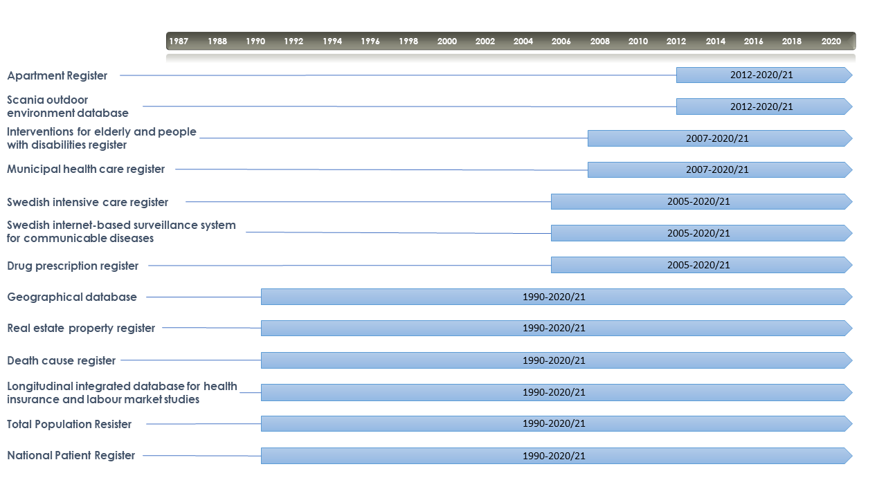

3 Overview of Registers
The study period in Register RELOC-AGE ranges from 1990-2020 and is comprised of 13 registers with staggered coverage which is here illustrated. Below the figure are descriptions of each register contained in the study.

| Register | Description |
|---|---|
| Total Population Register (TPR) (1968) | Sex; birth date; civil status (duration, dates, changes); address (dates, changes); income; country of origin; citizenship; in-/emigration (dates); n of people in the dwelling; housing tenure; socioeconomic indicators of the neighbourhoods (on postal code, municipal levels) |
| National Patient Register (NPR) (1987) | Hospitalization outcomes: total no. of hospitalizations/month; in-patient health outcomes based on ICD-10 chapters (e.g., for falls, fractures, stroke etc.) |
| Real Estate Property Register (REPR) (1908) | Objective housing characteristics for each dwelling: type of dwelling; price of dwelling; type of tenure; size; presence of stairs/elevator; floor; building and construction year; characteristics of the neighbourhood: communal facilities (e.g., roads), green areas; date of each relocation |
| Geographical database (GD) (1952) | DESO (demographical statistical unit); coordinates of the housing and address etc. |
| Death Cause Register (DR) (1952) | Death cause and date |
| Longitudinal integrated database for health insurance and labour market studies (LISA) (1990) | Education level, income, social insurance |
| Drug Prescription Register (DPR) (2005) | Drug prescriptions for chronic illnesses (ATC code, dose and date): endocrine; cardiovascular; hepatic; renal or neurological/ neuromuscular |
| Swedish Intensive Care Register (SIRI) (2001) | Intensive care for laboratory-confirmed influenza and (since 2020) COVID-19. |
| Swedish internet-based surveillance system for communicable diseases (SmiNet) (1997; 2004) | Laboratory-confirmed influenza and (since 2020) COVID-19 |
| Municipal Health Care Register (MHCR) (2007) | Care received and date |
| Interventions for Elderly and People with Disabilities Register (IEPDR) (2007) | Home help and service type and no of hours/month/year: escorting, replace the relative, personal care, meal delivery, security alarm, daytime activities; short-term vs long-term |
| Apartment Register (AR) (2012) | Dwelling type; number of rooms; dwelling unit size; kitchen type |
| Scania Outdoor Environment Database (ScOut) | 24 outdoor environemtn qualities 2008-2019 |